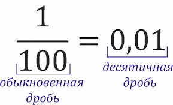

Что такое десятичные дроби |
|
|
Краткая теория Десятичной дробью называют число, в котором дробная часть записана с помощью знаменателя 10, 100, 1000 и так далее. Например, дробь 7/10 можно записать как 0,7, а дробь 25/100 как 0,25.
 Где удобно использовать десятичные дроби:
Чтобы правильно прочитать десятичную дробь, нужно назвать целую часть, затем число после запятой и разряд последней цифры дробной части. Например, 3,45 читается так: «три целых сорок пять сотых». |
|